Design and Analysis of a Two-Stage CMOS Operational Transconductance Amplifier
1 Introduction
This project walks through the process of building and analyzing the performance of a Two-Stage Unbuffered CMOS Operational Transconductance Amplifier (OTA) using SPICE.
It is done to teach myself how to design circuits rather than simply analyze the equations or solve problems in standard college curricula.
1.1 Why a two-stage CMOS OTA?
The two stage CMOS OTA is an introductory circuit in the study of op-amps that uses a standard single output differential pair and a common source stage in cascade, making it easier to analyze.
- It uses cascaded topology which provides higher gain compared to single stage amplifiers.
- The second stage uses only 2 transistors, which results is high output swing.
- CMOS amps suffer less from non-idealities compared to their BJT counterparts due to their extremely high input impedance.
The above reasons make it a very enticing circuit to learn design process without getting overwhelmed.
2 Architecture and Topology
The two-stage op-amp consists of a differential amplifier converting the differential input voltage to differential currents. These differential currents are applied to a current-mirror load recovering the differential voltage. This is nothing but a differential amplifier.
The second stage consists of common-source MOSFET converting the second-stage input voltage into current. This transistor is loaded by a current-sink load, which converts the current to voltage at the output.
The block diagram and transistor-level broken into V->I and I->V stages is shown in Fig 1.
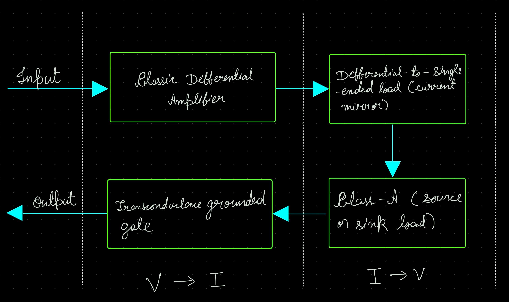
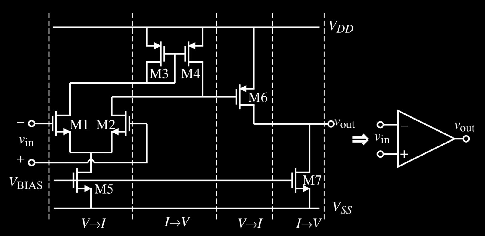
3 Theoretical Design and Calculations
The design of op-amps can be divided into two distinct design related activities that are for the most part independent of each other.
- The general schematic, which we have already decided above.
- Calculating the DC currents, sizing up the transistors and designing the compensation network, based on the requirements.
The boundary conditions and requirements we will need to design our op-amp:
Boundary Conditions:
- Process Specification (\(V_{T}\), \(K'\), \(C_{ox}\), etc.)
- Supply Voltage and Range
Requirements:
- Gain
- Unity Gain Bandwidth
- Slew Rate
- Input Common-Mode range (\(ICMR\))
- Output-voltage swing
- Phase Margin
- Power Dissipation
In our first iteration, let us use the basic topology shown in Fig 2.
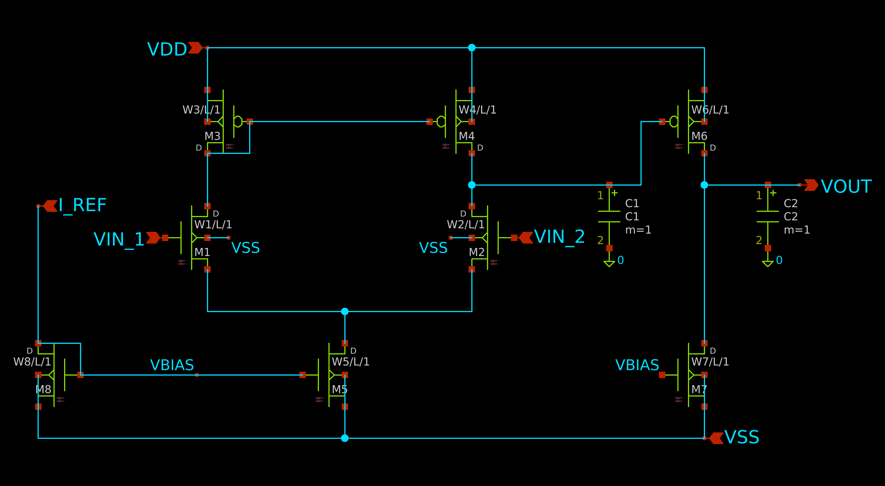
The small signal model for this circuit is shown in Fig 3.
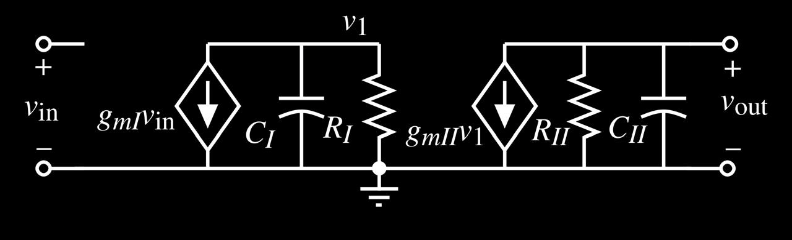
The locations of the two poles are given as:
\[ p'_{1} = (\frac{-1}{R_{I}.C_{I}})\] and, \[ p'_{2} = (\frac{-1}{R_{II}.C_{II}})\]
Where \(R_{I}\)/\(C_{I}\) and \(R_{II}\)/\(C_{II}\) are resistance/capacitance to ground seen from the output of the first stage and second stage respectively.
In most cases, these poles are far away from the origin and relatively close together. Fig 4 illustrates the open-loop frequency response of the negative-feedback loop op-amp in Fig 2.
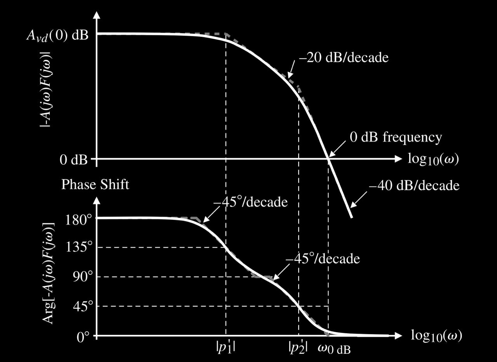
As seen in Fig 4, the phase margin is significantly less than \(45^{\circ}\), which will lead to instability. Thus, the op-amp needs to be compensated before using it in a closed loop configuration.
3.1 Miller Compensation
Adding the compensation capacitor \(C_{c}\), the resulting circuit is shown in Fig 5:
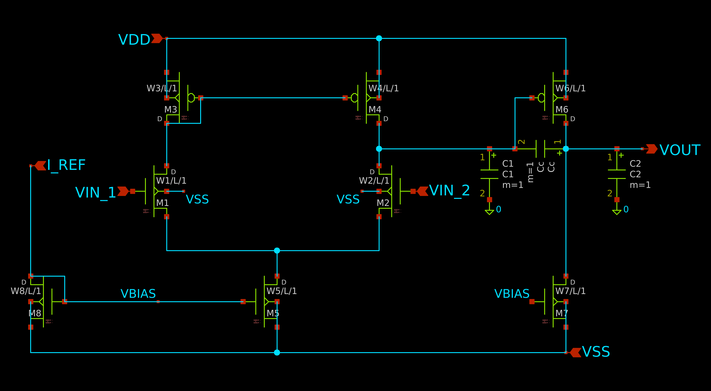
The resulting small-signal model is shown in Fig 6:
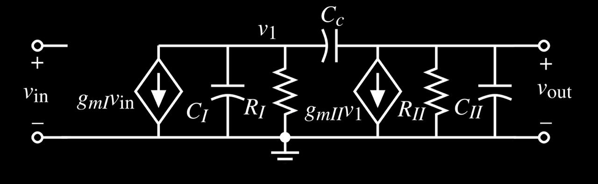
Using Miller’s Approximation and finding poles by inspection, we get
\[ p_{1} \approx (\frac{-1}{R_{I}.[C_{I} + C_{c}(1 + g_{mII}.R_{II})]})\] and,
\[ p_{2} \approx (\frac{-g_{mII}}{C_{II} + C_{c}}) \approx (\frac{-g_{mII}}{C_{II}}) ;\space if \space C_{II} > C_{c}\]
A zero also occurs on the positive real axis, which can be found from the small signal model relatively easily by setting \(A_{v} = 0\)
\[ z_{1} = (\frac{g_{mII}}{C_{c}})\]
The addition of miller capacitance moves the dominant pole \((p_{1})\) to the left and shifts the non dominant pole \((p_{2})\) to the right.
If we use our assumption of \(C_{II} > C_{c}\), then the zero is further to the right of \((p_{2})\)
Fig 7 shows results of compensation compared to the uncompensated state.
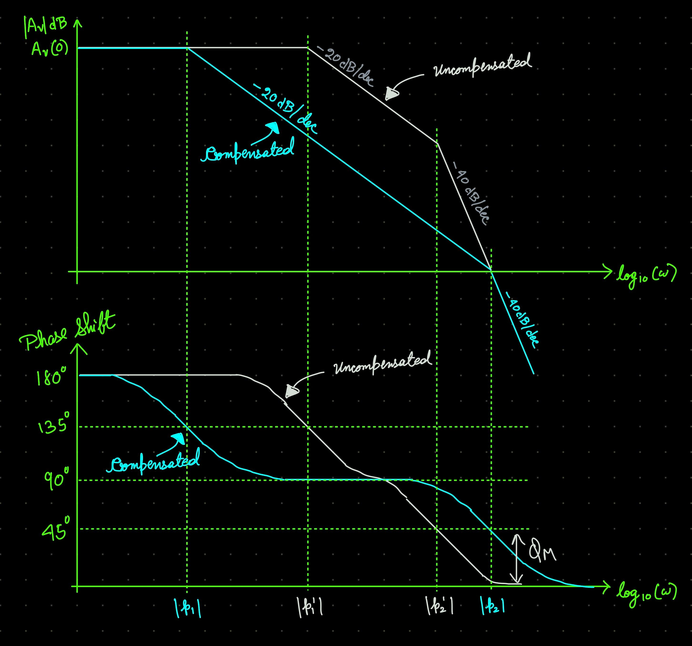
The Unity Gain Bandwidth is defined as the angular frequency (or frequency) when the gain crosses the \(0dB\) mark. It is given as:
\[ (\omega_{GBW}) \approx (\frac{g_{mI}}{C_{c}})\]
If we define \(z_{1} > 10.{\omega_{GBW}}\), then, to achieve \(\phi_{M} > 60^{\circ}\), we need the following condition:
\[ p_{2} > 2.2.{\omega_{GBW}}\] OR, \[ C_{c} > 0.22.C_{2}\]
3.2 Component Sizing
Before beginning, let us summarise the important relationships:
First Stage Gain: \[ A_{v1} = \frac{-g_{m1}}{g_{ds2} + g_{ds4}} = \frac{-2.g_{m1}}{I_{5}.(\lambda_{2} + \lambda_{4})}\]
Second Stage Gain: \[ A_{v2} = \frac{-g_{m6}}{g_{ds6} + g_{ds7}} = \frac{-2.g_{m6}}{I_{6}.(\lambda_{6} + \lambda_{7})}\]
Unity Gain Bandwidth:
\[ \omega_{GBW} \approx \frac{g_{m2}}{C_{c}}\]
Slew Rate: \[ SR = \frac{I_{5}}{C_{c}}\]
\(ICMR_{max} = V_{in}(max)\) = \[ V_{DD} - \sqrt{\frac{I_{5}}{K'(\frac{W}{L})_{3}}} - |V_{T03}|(max) + V_{T1}(min)\]
\(ICMR_{min} = V_{in}(min)\) = \[V_{SS} + \sqrt{\frac{I_{5}}{K'(\frac{W}{L})_{1}}} + V_{T1}(max) + V_{DS5}(sat)\]
Saturation Voltage: \[ V_{DS5}(sat) = \sqrt{\frac{2.I_{DS}}{K'(\frac{W}{L})}}\]
Going onto the design procedure, a first cut sequence we can follow is:
The design procedure begins by choosing a device length to be used by the circuit. This length determines the channel length modulation parameter \((\lambda)\), which is necessary to calculate amplifier gain.
Keeping our definition of \(z_{1} > 10.{\omega_{GBW}}\), minimum value of \(C_{c}\) can be defined as: \[ C_{c} > 0.22.C_{2}\]
Next, minimum value of tail current \((I_{5})\) can be determined by : \[ I_{5} = SR.C_{c}\]
The aspect ratio of M3 can now be determined using \(ICMR_{max}\) as: \[ (\frac{W}{L})_{3} = (\frac{W}{L})_{4} = \frac{I_{5}}{(K'_{3}).(ICMR_{max})^{2}}\]
Requirement of transconductance of input transistors can be determined from the knowledge of \(C_c\) and \(f_{GBW}\) \[ g_{m1} = g_{m2} = {\omega_{GBW}}.C_{c}\]
The aspect ratio of the input transistors are directly obtainable from \(g_{m1}\) as: \[ (\frac{W}{L})_{1} = (\frac{W}{L})_{2} = \frac{g_{m1}^{2}}{K'_{1}.I_{5}}\]
The saturation voltage of M5 can now be calculated using \(ICMR_{min}\) \[ V_{DS5} = (ICMR_{min}) - V_{SS} - \sqrt{\frac{I_{5}}{K'(\frac{W}{L})_{1}}} - V_{T1}(max)\]
With \(V_{DS5}\) determined, the aspect ratio of M5 can be extracted as: \[ (\frac{W}{L})_{5} = \frac{2.I_{5}}{K'_{5}.(V_{DS5})^{2}}\]
Again, following \(z_{1} > 10.{\omega_{GBW}}\), we can calculate the transconductance of M6 as: \[ g_{m6} = 2.2(g_{m2})(\frac{C_{L}}{C_c})\]
To achieve proper current mirroring of first-stage current mirror load, \(V_{SG4} = V_{SG6}\). using \(g_{m} = K'.(\frac{W}{L})(V_{GS}-V_{T})\) \[ (\frac{W}{L})_{6} = (\frac{W}{L})_{4}.(\frac{g_{m6}}{g_{m4}})\]
Knowing \(g_{m6}\) and \((\frac{W}{L})_{6}\), we can determine current flowing through M6 as: \[ I_{6} = \frac{g_{m6}^{2}}{2.K'_{6}.(\frac{W}{L})_{6}}\]
Aspect ratio of M7 can be extracted from the balancing equation below: \[ (\frac{W}{L})_{7} = (\frac{W}{L})_{5}.(\frac{I_{6}}{I_{5}})\]
We calculate power dissipated as the \(total \space current \space flowing \space through \space the \space supply \space voltage * total \space supply \space voltage\) \[ P_{dis} = (I_{5} + I_{6} + I_{8}).(V_{DD} + |V_{SS}|)\]
Now, the gain must be checked against the specifications. If it is too low, \(I_{5}\) and \(I_{6}\) may be decreased or the ratios \((\frac{W}{L})_{2}\) and \((\frac{W}{L})_{6}\) may be increased. All the previous calculations need to be performed again to ensure all conditions are satisfied.
3.3 Biasing Network
A current mirror approach with a stable reference current source (say, using \(\beta-Multiplier\)) is used to bias the current sink \(M_{7}\) and tail current source \(M_{5}\)
- Since \(M_{8}\) acts as our reference current mirror, we can have \((\frac{W}{L})_{8} = (\frac{W}{L})_{5}\) to set \(I_{tail}=I_{ref}\), and the relation of \((\frac{W}{L})_{5}\) with \((\frac{W}{L})_{7}\) is known from above calculations.
The Bias Point of the differential input is found as:
\[ g_m = \frac{2I_{D}}{V_{ov}} \implies |A_{v1}| = \frac{g_{m1}}{g_{ds2} + g_{ds4}} = \frac{2}{V_{ov}.(\lambda_{2}+\lambda_{4})} \implies V_{ov} = \frac{2}{|A_{v1}|.(\lambda_{2}+\lambda_{4})}\]
3.4 Requirements and Specifications
The specifications we will use are as follows:
\[ A_{v} > 5000{\space}V/V\] \[ {f}_{GBW} = 5MHz\] \[ \phi_{M} > 60^{\circ}\] \[ ICMR_{min} = -1{\space}V\] \[ ICMR_{max} = 2{\space}V\] \[ SR > 10{\space}V/{\mu}s\] \[ V_{out} {\pm}2{\space}V\] \[ V_{DD} = 2.5{\space}V\] \[ V_{SS} = -2.5{\space}V\] \[ C_{L} = 10{\space}pF\] \[ P_{dis} < 2{\space}mW\] \[ L = 1{\space}{\mu}m\]
The important process parameters from the model used are:
\[ K'_{n} = 120{\space}{\mu}A/V^{2}\] \[ V_{TN} = 0.8{\space}V\] \[ {\lambda}_{n} = 0.04{\space}V^{-1}{\space}(at{\space}L=1{\space}{\mu}m)\] \[ K'_{p} = 40{\space}{\mu}A/V^{2}\] \[ V_{TP} = -0.9V\] \[ {\lambda}_{p} = 0.05{\space}V^{-1}{\space}(at{\space}L=1{\space}{\mu}m)\]
3.5 Initial Sizing
Following the design procedure and substituting the values from requirements and process parameters, the initial calculated values are:
\[ C_{c} = 3{\space}pF \] \[ I_{5} = 30{\space}{\mu}A \] \[ (\frac{W}{L})_{3} = (\frac{W}{L})_{4} \approx 10 \] \[ g_{m1} = g_{m2} = 94.2{\space}{\mu}S\] \[ g_{m3} = g_{m4} = 109{\space}{\mu}S\] \[ (\frac{W}{L})_{1} = (\frac{W}{L})_{2} \approx 3\] \[ V_{DS5}(sat) = 0.411{\space}V\] \[ (\frac{W}{L})_{5} \approx 3\] \[ g_{m6} = 942{\space}{\mu}S\] \[ (\frac{W}{L})_{6} \approx 86.6\] \[ I_{6} = 130{\space}{\mu}A\] \[ (\frac{W}{L})_{7} \approx 13\] \[ V_{CM} = 1.118{\space}V\] \[ A_{v} \approx 5600{\space}V/V\] \[ P_{dis} = 0.95{\space}mW\]
These initial values were entered into xschem and simulated. The following sections document the schematic implementation, challenges encountered in measuring the open-loop gain and the iterative refinements made to meet all specifications.
3.6 Pre-Simulation Results
Based on the napkin math above, the following performace is expected:
| Parameter | Calculated Value | Specification |
|---|---|---|
| DC Gain | \(\approx74.9 dB (5600 V/V)\) | \(> 73.98 dB (5000 V/V)\) |
| GBW | \(5 MHz\) | \(5 MHz\) |
| Phase Margin | \(> 60^{\circ}\) | \(> 60^{\circ}\) |
| Slew Rate | \(10 V/μs\) | > \(10 V/μs\) |
| Power | \(0.95mW\) | < \(2mW\) |
3.7 Schematic Implementation
The circuit was implemented in Xschem and simulated using the Ngspice engine, utilizing a Level 3 SPICE model(Baker, n.d.-b) for a 1 µm CMOS process. The complete schematic is shown in Fig 8.
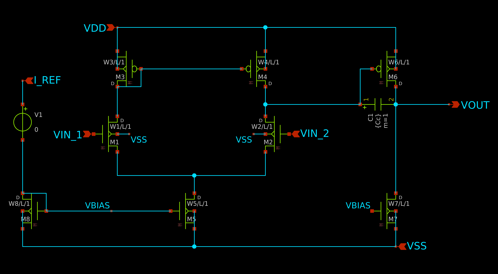
The final transistor sizing after all iterations is summarized in the table below:
| Transistor | Type | W/L |
|---|---|---|
| M1, M2 | NMOS | 3.5 |
| M3, M4 | PMOS | 10 |
| M5 | NMOS | 3 |
| M6 | PMOS | 86.6 |
| M7 | NMOS | 13 |
| M8 | NMOS | 3 |
Component values: \(C_c = 2.5{\space}pF\), \(C_L = 10{\space}pF\)
4 Simulation Results
4.1 DC Operating Point
All transistors were verified to be in saturation before AC analysis. The testbench used is shown in Fig 9.
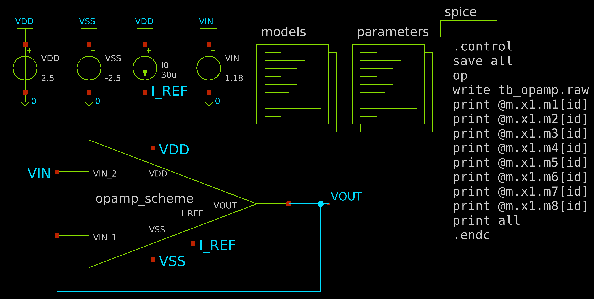
| Transistor | \(|V_{ov}|\) | \(|V_{DS}|\) | Region |
|---|---|---|---|
| M1 | 0.745 | 1.748 | Saturation |
| M2 | 0.745 | 1.706 | Saturation |
| M3 | 0.216 | 1.116 | Saturation |
| M4 | 0.216 | 1.159 | Saturation |
| M5 | 0.463 | 2.134 | Saturation |
| M6 | 0.259 | 1.320 | Saturation |
| M7 | 0.463 | 3.679 | Saturation |
| M8 | 0.463 | 1.263 | Saturation |
4.2 Open-Loop Gain (AC Analysis)
Simulation of measurement of open-loop gain of op-amp is a difficult step to perform. The reason is the high differential gain in op-amps.
In our case, with a gain of \(~5000{\space}V/V\), any offset voltage present is amplified by \(5000.V_{OS}\) at the output. So, for any \(V_{OS} < 0.5mV\), the output is driven to the maximum output swing possible, making it difficult to measure the open loop gain. This is shown in Fig 10.
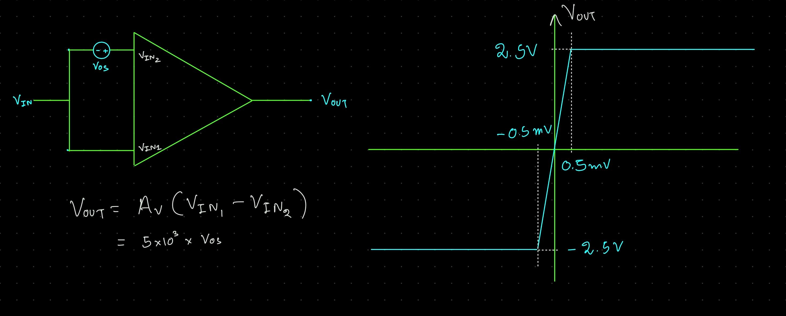
To measure the open-loop gain, I have tried two different methods.
4.2.1 The LC Method
This is a conceptually neat method. A large inductor is used between the feedback between \(V_{out}\) and \(V_{IN1}\), and a large capacitor is used between \(V_{IN1}\) and \(GND\).
At DC level, \(f=0\), so the inductor acts as a short circuit, while the capacitor acts as open circuit, this results in the amplifier working as a unity gain amplifier.
When a small AC signal (say, \(V_{in})\) is applied, the inductor, which has a large value, essentially operates as an open circuit, while the capacitor acts as a short circuit to \(GND\). So, \(V_{out} = A_{v}.V_{in}\).
The test bench and simulation results with this method are given in Fig 11 and Fig 12.
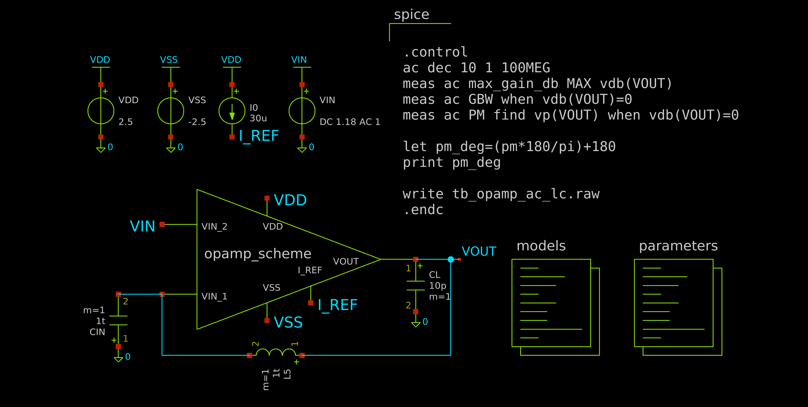

However, this is not a practical method, since such large inductors and capacitors are generally not available.
4.2.2 The RC Method
This method uses a large resistor \((R_f)\) in place of the inductor. Because the gate terminal of the input MOSFET has very high DC impedance, the steady-state current flowing through the feedback loop is approximately zero (\(I_f \approx 0\)). Consequently, there is zero voltage drop across \(R_f\), this forces \(V_{out} = V_{in1}\) and causes the circuit to operate as a unity-gain amplifier at DC.
On applying a small AC signal, the capacitor acts as a short-circuit to \(GND\). So, again, operating in the open-loop configuration, \(V_{out} = A_{v}.V_{in}\).
In this circuit, it is necessary to select the \(\frac{1}{RC}\) time constant a factor of \(A_v(0)\) less than the anticipated dominant pole of the op-amp. The true open loop characteristics will not be observed until the frequency is approximately \(\frac{A_v(0)}{RC}\), Above this frequency, the gain is essentially the open-loop gain of the op-amp. This method works well for both simulation and measurement.
4.2.2.1 Component Selection
To make sure the newly introduced zero doesn’t interfere with our gain, values of \(C_{in} = 10uF\) and \(R_f = 10M\Omega\) were chosen so the pole lies very close to the origin.
\(f_{z} = \frac{1}{2.\pi.RC} \approx 1.59mHz\)
As mentioned above, the true open loop characteristics will not be observed until the frequency is approximately \(\frac{A_v(0)}{RC}\), i.e, the new pole.
\(f_{obs} = \frac{A_{v}(0)}{2.\pi.RC} \approx 8.9Hz\)
So, we begin seeing the open-loop gain near 10Hz.
The test bench and simulation results with this method are given in Fig 13 and Fig 14.
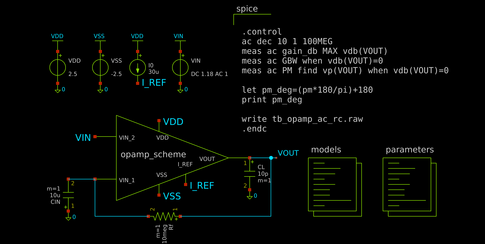

The results using both methods are given below:
| Parameter | LC Method | RC Method | Specification |
|---|---|---|---|
| Max Gain | 74.07 dB | 74.00 dB | >73.98 dB |
| GBW | 5.85 MHz | 5.85 MHz | 5 MHz |
| Phase Margin | 63.18° | 63.19 | >60° |
4.3 Transient Response and Slew Rate
Slew Rate is the rate of change of output voltage with respect to time. A large-signal step input was applied to measure the slew rate. The test bench and output waveforms are shown in Fig 15 and Fig 16.
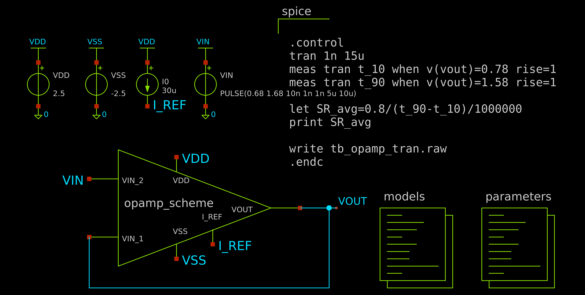

The average slew rate is measured between 10% and 90% of the final voltage swing. It is found to be:
\(SR = 10.637V/{\mu}s\)
4.4 DC Sweep - Linear Output Swing
The linear output swing is defined as the voltage range over which the amplifier maintains at least 90% of its ideal gain. Because the circuit is configured as a unity-gain buffer, the ideal DC transfer characteristic has a slope of \(1\space{V/V}\). Therefore, the absolute limits of the output swing are identified as the points where the derivative of the transfer curve \(\frac{dV_{out}}{dV_{in}}\) drops below \(0.9 \space V/V\)
The test bench and simulation result are given in Fig 17 and Fig 18.
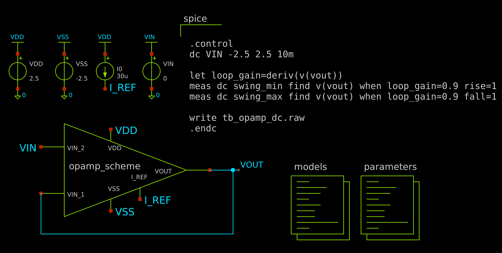

The results obtained are given below:
- \(V_{out}(max) = 2.44V\)
- \(V_{out}(min) = -2.27V\)
5 Design Iterations
5.1 Iteration 1 - Initial Sizing (\(\frac{W}{L} = 3\) for M1 and M2)
| Parameter | Target | Result |
|---|---|---|
| Max Gain | \(> 73.98 dB\) | \(73.25 dB\) |
| GBW | \(5 MHz\) | \(4.55 MHz\) |
| Phase Margin | \(>60^{\circ}\) | \(68.08^{\circ}\) |
Both Max Gain and GBW were not up to specification.
Since \(GBW = \frac{g_{m1}}{2\pi C_c}\) and \(g_{m1} = \sqrt{2K'_p \cdot \frac{W}{L} \cdot I_{D1}}\), increasing \(g_{m1}\) simultaneously increases both GBW as well as the first-stage gain.
So, increasing \(\frac{W}{L}\) for M1 and M2 is the next logical step.
5.2 Iteration 2 - (\(\frac{W}{L} = 3.5\) for M1 and M2)
| Parameter | Target | Result |
|---|---|---|
| Max Gain | \(> 73.98 dB\) | \(74.07 dB\) |
| GBW | \(5 MHz\) | \(4.96 MHz\) |
| Phase Margin | \(>60^{\circ}\) | \(66.20^{\circ}\) |
| Slew Rate | \(>10V/{\mu}s\) | \(8.86V/{\mu}s\) |
While the gain and GBW seem to be well within specifications, the slew rate is lower than our target.
Since \(SR = \frac{I_{5}}{C_{c}}\), we may either try increasing \(I_5\) or decreasing \(C_{c}\). Increasing \(I_5\) requires us to go through every calculation step above again to get the updated sizing, so here we try decreasing \(C_{c}\) instead.
Our use of \(C_c = 3pF\) is well above the condition of \(C_c > 0.22C_L\), which means \(C_c > 2.2pF\).
Let us use \(C_c = 2.5pF\)
5.3 Iteration 3 - (\(C_c = 2.5pF\))
| Parameter | Target | Result |
|---|---|---|
| Max Gain | \(> 73.98 dB\) | \(74.07 dB\) |
| GBW | \(5 MHz\) | \(5.85 MHz\) |
| Phase Margin | \(>60^{\circ}\) | \(63.18^{\circ}\) |
| Slew Rate | \(>10V/{\mu}s\) | \(10.64V/{\mu}s\) |
Now we seem to be within good margins of out specifications.
We will adopt this sizing.
6 Final Performance Summary
| Parameter | Target | Result |
|---|---|---|
| Max Gain | \(> 73.98 dB\) | \(74.07 dB\) |
| GBW | \(5 MHz\) | \(5.85 MHz\) |
| Phase Margin | \(>60^{\circ}\) | \(63.18^{\circ}\) |
| Slew Rate | \(> 10 \space V/\mu s\) | \(10.64 \space V/\mu s\) |
| Power | \(< 2mW\) | \(1.188mW\) |
| Output Swing | \(\pm 2V\) | \(-2.27 \space to \space 2.44 V\) |
6.1 The Transistor and Component values used:
| Transistor | Type | W/L | Current \(({\mu}A)\) |
|---|---|---|---|
| M1, M2 | NMOS | 3.5 | 15.45, 15.48 |
| M3, M4 | PMOS | 10 | 15.45, 15.48 |
| M5 | NMOS | 3 | 30.93 |
| M6 | PMOS | 86.6 | 176.68 |
| M7 | NMOS | 13 | 176.68 |
| M8 | NMOS | 3 | 30.00 |
Component values: \(C_c = 2.5pF\), \(C_L = 10pF\)
7 Limitations and Known Critiques
The traditional Miller-compensated two-stage OTA with a compensation capacitor has known limitations. Baker notes that this topology, particularly with a zero-nulling resistor, has practical drawbacks—such as slower response times, larger layout areas, and higher power consumption—compared to more modern “indirect” compensation strategies, such as using split-length devices (Baker n.d.a).
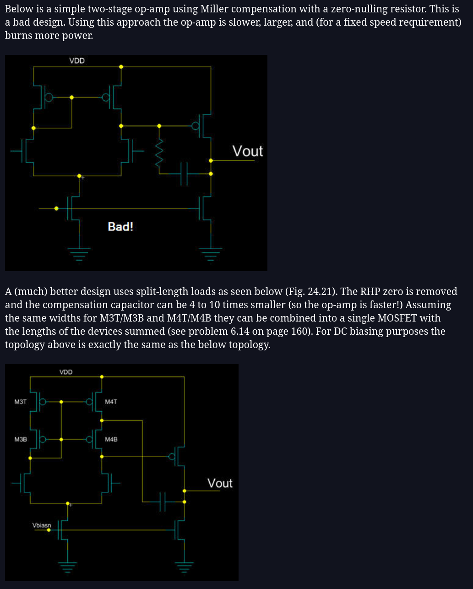
The goal of this project was to learn design methodology rather than implement a production-ready topology. The two-stage Miller-compensated OTA remains the standard introductory circuit for this purpose, providing clear insight into compensation theory, pole-zero placement, and the gain-bandwidth tradeoff. Exploring Baker’s recommended alternatives is a natural next step.
8 References
9 Personal Note
In this document, I have tried to include everything I have learnt designing this project as an absolute beginner to both SPICE as well as analog electronics in general.
I have spent nearly a month on this topic, out of which only about a week or two was spent on building this. I first discovered the two-stage CMOS OTA in an IEEE conference paper by M. Kadam(Kadam 2021), which used skywater pdk, I tried to understand it, but couldn’t get an intuitive feel for why the design choices were made the way they were.
But this motivated me to try to design this, since it seemed to use the basic building blocks I had already studied. I followed up with YouTube videos on the same topic, but again, while I was following the steps, I didn’t understand why we were making the choices that we were, but at the same time, I felt I was getting somewhat more comfortable with the topic.
I followed up with this question on Reddit and got incredibly helpful and detailed answers. Specifically, user u/Fast_Document1643 was very helpful, replied to all my questions with great patience, even if they were basic, and also pointed me towards the book I used as my main source of reference here: CMOS Analog Circuit Design by Allen & Holberg. The entire process of the design and the steps followed here are taken from the book.
I was also stuck in measuring the operating points and open loop gain for a long time, scratching my head because my op-amp would just stick to a value near the power supply. Like in every course, I have read that the offset voltage getting multiplied with a huge gain causes this, but I just couldn’t think of that in my design process (I guess this is what experience develops?). After realizing this, work was a lot easier.
On the topic of other measurements, while I did know the concept of slew rate and output voltage swing, I didn’t know how to measure their exact values, so I had to study up measurement techniques before actually using the .dc or .tran commands to find them.
For iterations, I had surprisingly little to worry about. Allen & Holberg’s book mentioned the exact pitfalls and exactly which values to look into, so all I had to do was mess with them and look at parameters that were dependent on them and make sure all were within range. I probably should have rounded up the \(\frac{W}{L}\) ratio of M6 to 87 instead of keeping it at 86.6, but I kinda forgot I didn’t until everything was done, and when all the parameters seemed be within margin, I didn’t really want to change anything.
Overall, even though I wanted to pull my hair out at times, I had fun building this. Coming from solving problems in my textbooks to actually designing something to meet specifications is a lot more challenging than I expected.